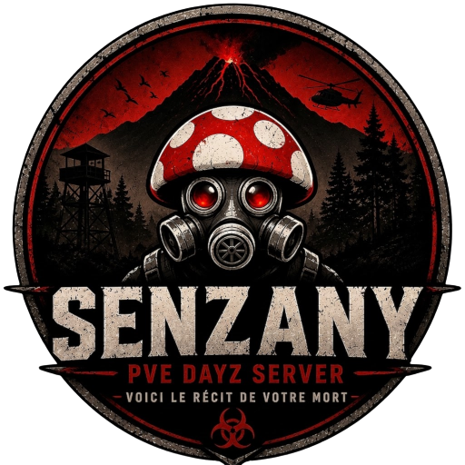
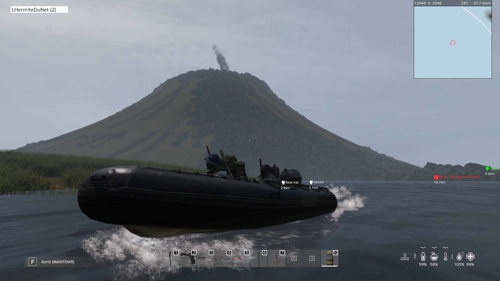
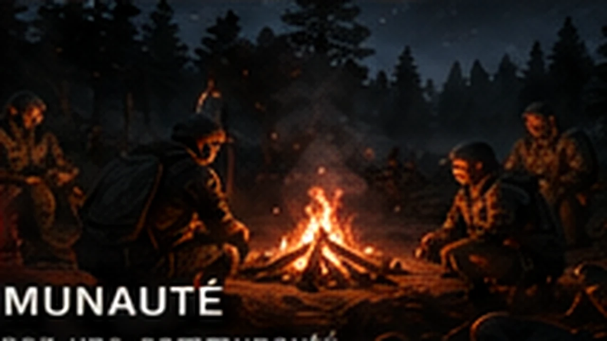
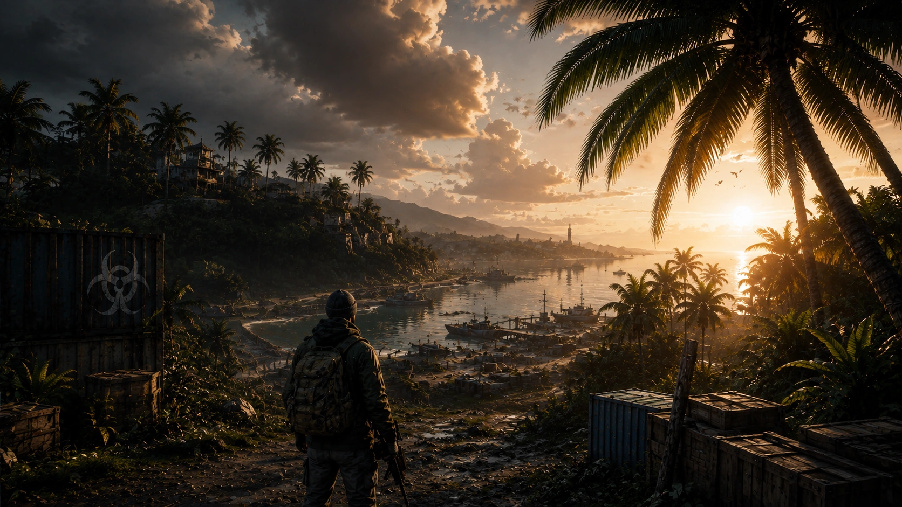

SENZANY // CHERNARUS
VOICI LE RÉCIT
VOICI LE RÉCIT
DE VOTRE MORT.
Un serveur DayZ PVE français pensé comme un monde vivant : progression, événements, économie, IA et contenus saisonniers.

Découvrez les grands systèmes qui donnent à Senzany son identité et sa profondeur.






Progression saisonnière, missions et récompenses : bientôt une nouvelle manière de vivre Senzany.
DÉCOUVRIR LA SAISONConnectez Steam et Discord, suivez vos votes, récupérez votre cagnotte et accédez à vos récompenses.
ACCÉDER À MON PROFIL